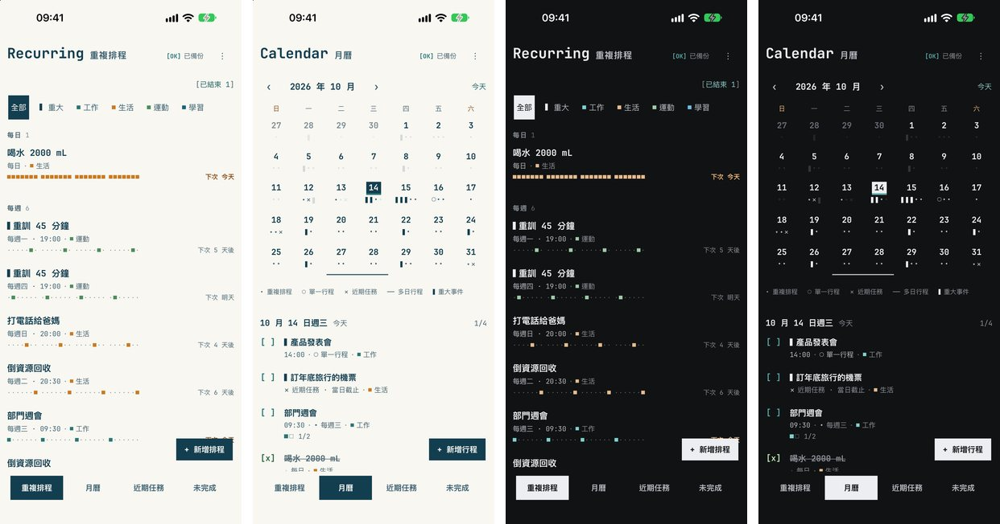
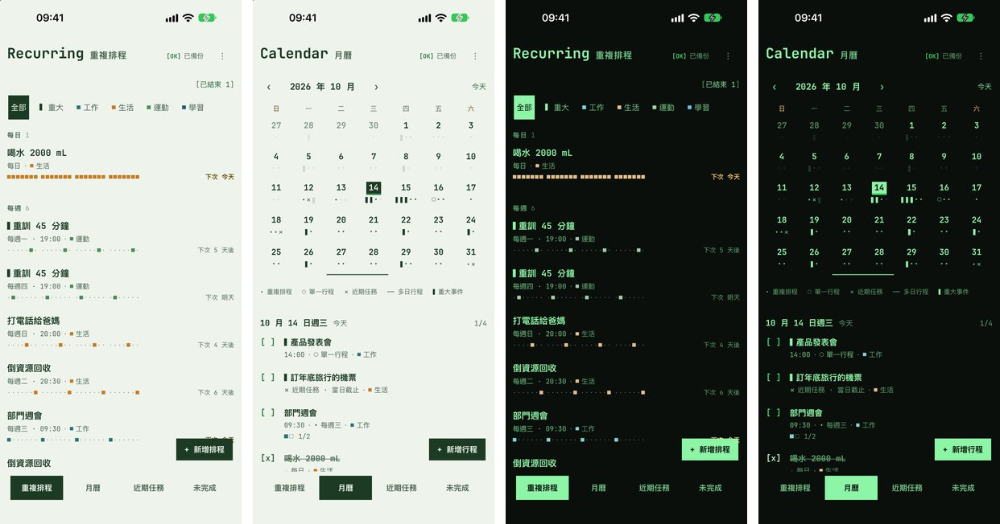
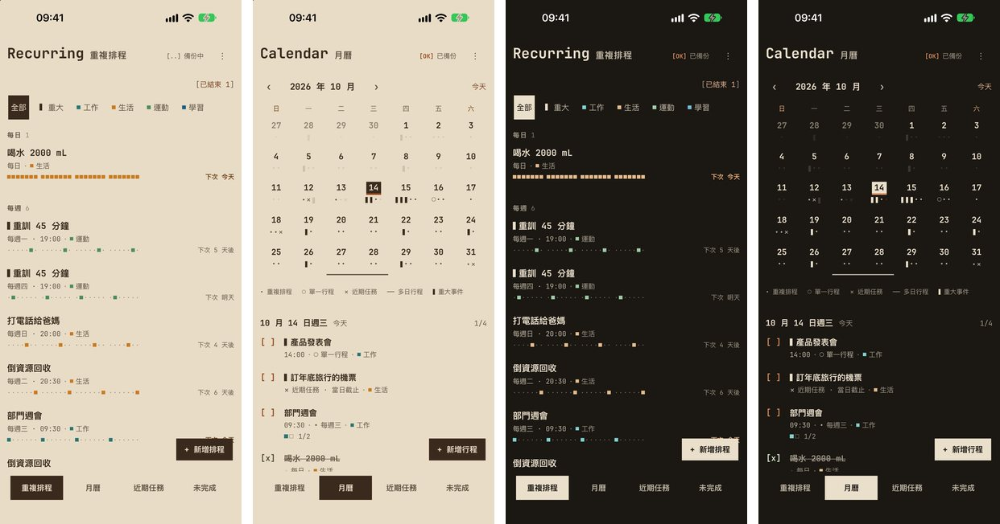
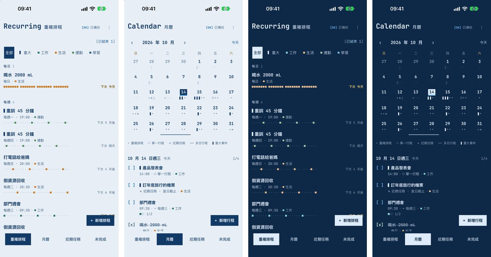
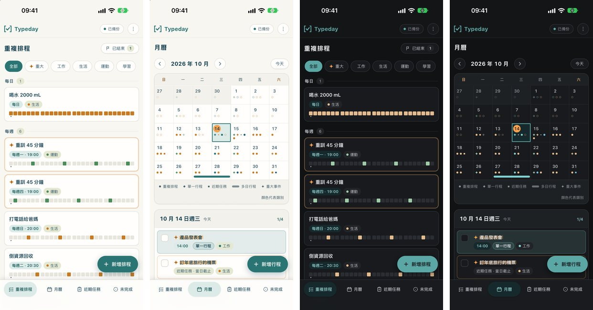
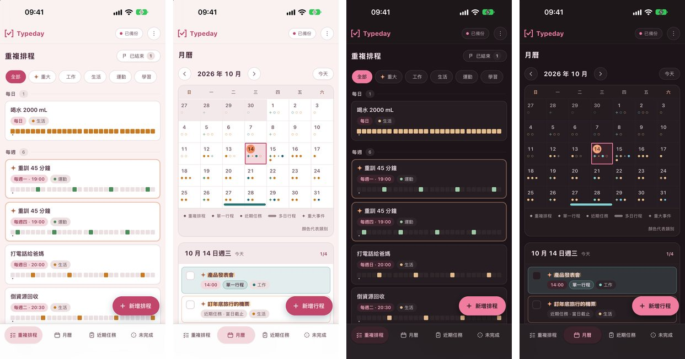
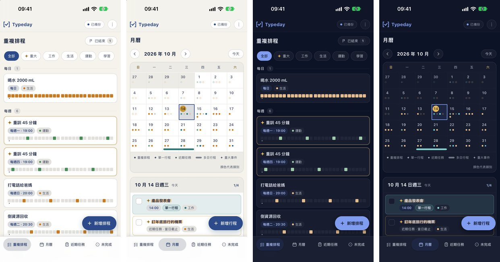
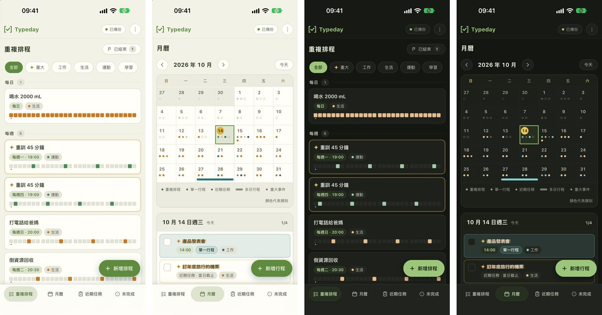

每張都是真的 App 在模擬器裡換上新顏色拍的（示範資料）；每組四張：淺色清單、淺色月曆、深色清單、深色月曆（往左滑看後兩張）。
現在的米白紙、深青色字。

黑底綠色磷光字的舊電腦螢幕。[OK]、[x] 這些括號本來就很像終端機，跟 Typeday 的名字最搭。

最有個性、截圖最搶眼的就是深色版（黑底綠字）。淺色版只是淡綠色的紙，跟現在的打字機差不多，建議這個主題只做深色（選了它就固定深色）。
牛皮紙袋的暖棕色紙、深咖啡色字、鐵鏽紅標重點，像手打的帳本。

淺色、深色都有特色：淺色是牛皮紙袋的暖棕，深色像深焙咖啡。溫暖有手作感，跟現在的米白打字機差異夠大。類別顏色裡的橘、棕色在牛皮紙上比較不明顯，正式做時要微調。
工程藍圖的藍底白線，主色是製圖用的青色，重點用黃色。

深色版就是藍圖的樣子，很俐落；淺色版是淡藍色的紙，比較低調。想要冷色系可以拿它換掉牛皮紙。
現在的米白底、白卡片、青綠主色。

粉色系的糖果紙：白卡片、梅子色字、珊瑚色主色，柔和但不幼稚。

淡粉色的底配白卡片，是三個糖果紙家族候選裡跟現有主題差最多的；深色版是帶紫的深色，粉紅主色很亮眼。配糖果紙會彈跳的勾選框很合。
深藍夜空配金色，沉穩有質感；淺色版是象牙白配深藍。

深色版（深藍配藍色主色）很漂亮；淺色版只是把糖果紙的主色換成藍，跟現有的糖果紙差不多。
抹茶綠與米白，安靜自然，重點用柚子黃。

好看但跟現在的主色（青綠）太接近，放在一起選的時候差別不大，比較不建議。